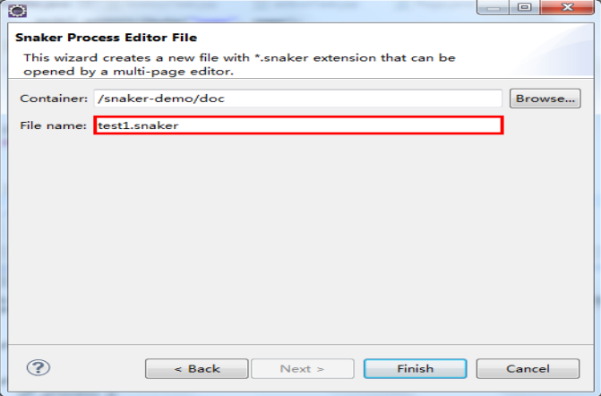
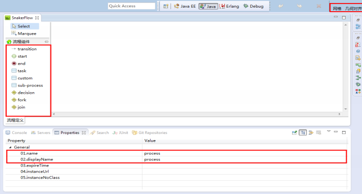

一、获取插件:
在链接http://pan.baidu.com/s/1hqza8BU中下载以下文件：
| 文件路径 | 说明 |
|---|---|
| /snaker-designer_2.0.0.jar | 基于eclipse的RCP插件 |
二、安装插件
复制snaker-designer_2.0.0.jar到eclipse的plugins目录下，重新启动eclipse即可(经过测试的版本有eclipse4.2/4.3)
三、定义流程
依次选择File->New->Other->Snaker，如果安装成功，如下图所示:

选择Snaker Process File并输入文件名称，如下图所示:
点击Finish，则打开流程设计器主界面，其中包括两大部分:流程组件、属性Properties视图，如下图所示:
流程组件:
目前节点组件包括:start、end、task、custom、sub-process、decision、fork、join，分别对应开始、结束、任务、自定义、子流程、决策、分支、合并组件模型.
属性视图:
对组件模型设置属性，包括常用的name、displayName等
布局工具:
右上角的网格、几何对齐用于图形布局.
3 属性说明
| 组件模型 | 属性 | 描述 |
|---|---|---|
| 通用属性 | name | 组件名称，模型内名称唯一 |
| displayName | 组件中文显示名称，方便阅读 | |
| preInterceptors | 前置拦截器 | |
| postInterceptors | 后置拦截器 | |
| Process | expireTime | 期望完成时间，设置表达式变量由参数传递 |
| instanceUrl | 流程定义列表页面直接启动流程实例的URL | |
| instanceNoClass | 流程实例编号生成类 | |
| Transition | expr | 决策选择Decision节点的输出变迁表达式 |
| Task | form | 用户参与的表单任务对应的URL |
| assignee | 任务参与者变量 | |
| assignmentHandler | 任务参与者处理类 | |
| taskType | 任务类型（主办/协办） | |
| performType | 任务参与类型（针对多个参与者），ANY为其中一个参与者完成即往下流转；ALL为所有参与者完成才往下流转 | |
| reminderTime | 任务提醒时间 | |
| reminderRepeat | 提示重复次数 | |
| expireTime | 期望完成时间 | |
| autoExecute | 超时是否自动执行 | |
| callback | 自动执行的回调设置 | |
| Custom | clazz | 自定义节点的Java类路径，两种方式： 1.实现IHandler接口，实现接口时不需要设置下面三个属性。 2.无接口实现的普通java类，需要设置下面方法名称、参数属性 |
| methodName | 定义需要执行的java类的方法名称 | |
| args | 定义传递的参数表达式 | |
| var | 定义返回值变量名称 | |
| SubProcess | processName | 子流程名称（对应process的name属性） |
| Decision | expr | 决策选择表达式 |
| handleClass | 决策选择的处理类，实现DecisionHandler接口 |